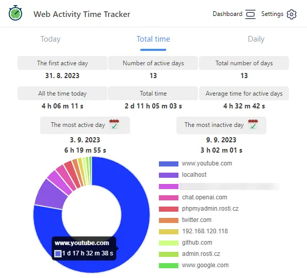
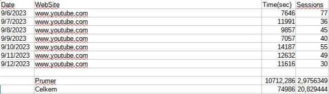

Jak se zbavit závislosti na youtube
Začínám si zas a znova uvědomovat, že mi nejvíce ničí život závislost na seldování online videí. Už to bude přes 10 let závislosti a nebojím se říci, že se jedná o velkou závislost. V mém plánu, který jsem již představoval, musím každý měsíc učinit rozhodnutí o tom, jaký zvyk se naučím ten daný měsíc. A myslím si, že mám favorita. Chci se zbavit závislosti na sledování online videí. Je to asi ta nejtěžší výzva, kterou mohu podstoupit na této cestě. Ale také má největší odměnu. Ušetřím spoustu času.
Zde na tomto obrázku je vidět velikost mého problému. Více jak 75% času na internetu strávím sledováním youtube videí. Za posledních 13 dní jsem strávil 1 den a 17 hodin na youtube. Takže si vemte, že žijete dva týdny a z toho minimálně 3 dny času, co jste vzhůru sledujete tupě videa. Mám seriózní problém.
20 hodin týdně. A to jsem ten samý člověk, co se smál spolužákovi, když mi ukázal, že má týdně na TikToku 21 hodin. A to si myslím, že už není sranda. Proto si musím nastínit strategii, jak tuto závislost překonat.
Spousta lidí by jistě namítla, že nemám prostě vůbec zapínat youtube, nebo si ho zablokovat. A bohužel to jsem již zkoušel. A nevyšlo to. Můj mozek byl vždy silnější a našel si cestu. Ať už to byla hláška: "Jenom podcast." Nebo: "Jenom jedno video." Vždy jsem s tím měl problém. Proto jsem ochoten si o tom zkusit přečíst nějaké ověřené zdroje. A rozhodně ne youtube. Všem tvůrcům, které sleduji věřím, ale nemyslím si, že by bylo v jejich dobré vůli mě vyhánět z youtube.
Prvním kamenem úrazu je pocit toho, že mi něco uteče. Rád se dívám na custom PC buildy, nebo na nějaké bastlení, či budování. Nebo na mé oblíbené tvůrce ohledně sebezlepšování. Akorát na youtube je tak skvělý algoritmus na doporučování videí, že se tomu neubráním. Řešením je se vzdát těchto videí za cenu toho, že budu volnější a budu mít mnohem více času. Což se hodí, jelikož tu básním, že chci naprogramovat vlastní blogovací systém. Dokonce jsem si zařídil AWS server a doménu. Ale nemůžu najít odhodlání se tomu věnovat. A myslím si, že 20 hodin týdně je dost času na volný projekt. Takže to za to asi stojí. Totiž můj mozek momentálně promítá obraz těch naplňujících videí, kde lidé budují věci. Ale já vím, že to je pouze kulisa a že mi nic neuteče, ba naopak mi to pomůže se dostat dále.
Chtěl bych aplikovat řešení ze 100 na 0. Akorát to jsem již zkoušel a neúspěšně. Představa je to krásná, ale nefunkční. V minulosti jsem zkoušel hodinu denně, což fungovalo. Vždy k jídlu jsem si pustil video a pak jsem to po hodině vypl. To bych chtěl zkusit. Z nynějších 21 hodin bych to zkrouhnul na 7. To je snížení o 2/3! A to je dost času. 14 hodin se mohu věnovat něčemu jiném přes týden. Takže tím asi začnu. Dnes je úterý, takže bych očekával příspěvek další úterý.